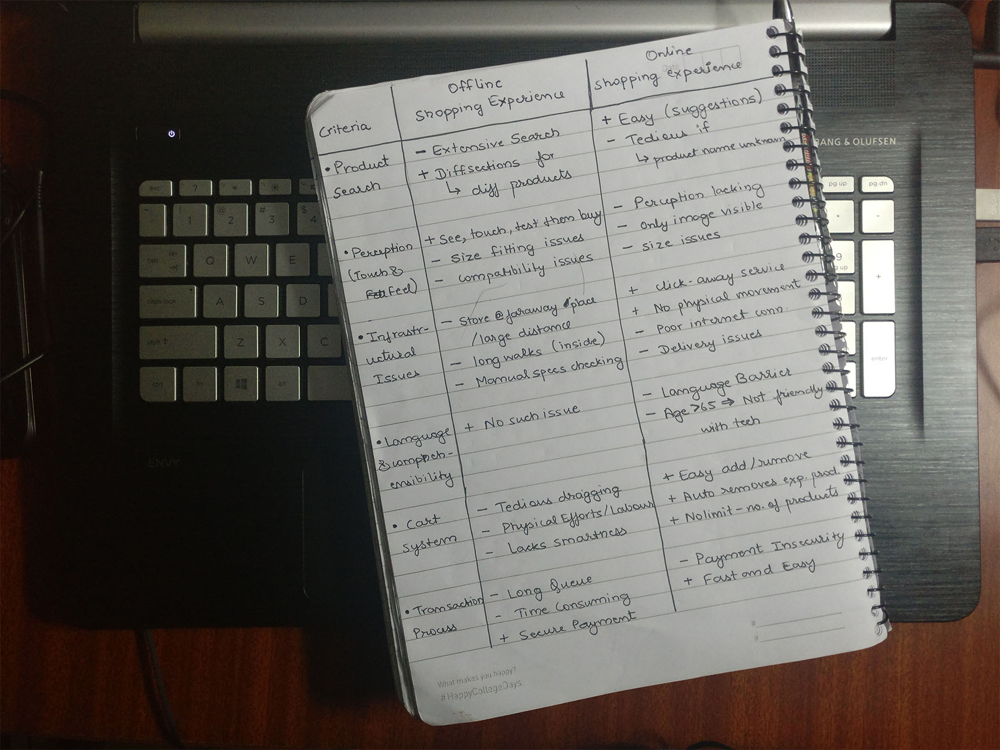
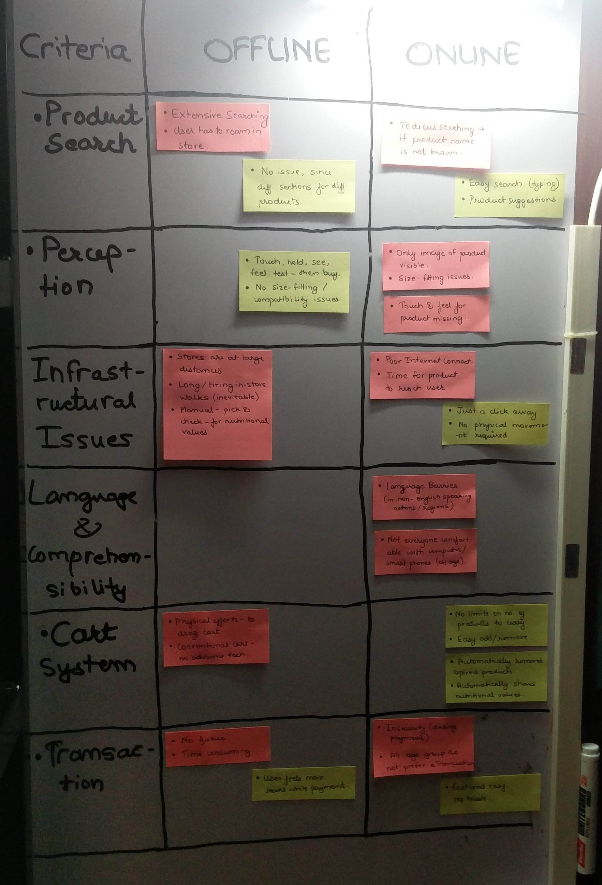

Finalist, UX World Championship'16
Among World top 10 students
Competition Website: UX World Championship (World Usability Congress)
Brief
I participated in UX World Championship'16, and advanced to the finals and secured a position among the top 10 students in the world. UX World Championship is a global competition for UX enthusiast students all over the world, organised by World Usability Congress. 150 different universities from all around the globe had been invited to be part of World User Experience Championship and had to send their top UX students to participate. After prelims round, the best 10 students are invited to be part of the UX World Championship Finals in Graz, Austria.
Championship Details
Competition Process
- In the prelims round students/participants are given 'UI/UX and usability' oriented problem task.
- All participating students are supposed to solve the same task individually, visualize and prepare their solution as an A0 PDF.
- This, in turn, will then be sent to the UX World Championship Jury.
- The best 10 students selected by the jury are then invited to be a part of UX World Championship Finals in Graz, Austria.
- Top 10 students also get a ticket to the World Usability Congress, accommodation for one week in Graz and an experience tour in Styria.
- In the finals, the top 10 students get 2 Tasks which they are supposed to solve in time boundation.
- Winner of the competition is decided based on the performance in the final 2 tasks.
Problem Statement
The competition challenged students to develop interactive concepts for future shopping experiences in order to improve the way we shop. Each entrant had to design a poster depicting their ideas, a process which took a lot of hard work and careful consideration.
Needfinding
I interviewed several people in and outside our campus. First I defined the target userbase and then fanned out to discover people I wanted to interact it. The goal was to identify people’s frustration points and the degree till which the UX demands extreme measures. Since the market in Chennai is still not developed for e-commerce based marketplace, the majority opinions and feedback I received was for offline commerce.
Affinity Wall
Based on the above observations, I started building an affinity wall to define my two categories of online and offline commerce in much more detail. Major brainstorming took place over the extent of technology I want in the final UX. I could even have a VR based online commerce, but decided against it due to the various reasons listed below.
Winning Poster
Putting in the concepts, assertions and conclusions gathered from the needfinding and affinity wall processes, I moved toward designing my final submission poster. The poster is broadly divided into a brief description, problem set, offline shopping solution, online shopping solution, and then the conclusion.

Problem Set: In problem set I descibed the correlation between the inferences drawn from our survey and the given problem statement. The emphasis was given on empowering all age group and 'test personalities' given in the problem set, to make significant headway's into digital retail.
Offline Shopping UX: In offline shopping I came up with a solution that was simple, cost effective, and user-friendly for all age groups. I came up with the concept of eCart and a dedicated mobile app to carry out various operations for the eCart.
Online Shopping UX: It comprised of an age and regional dynamic UI/UX, with heuristics like regional language support, age-and-profile optimisation etc.
Finals
All the finalists were awarded with the following:
- A ticket to the World Usability Congress 2016.
- A flight to Graz / Austria.
- Accommodation for one week.
- An Experience Tour in Styria.
Conclusion
Sadly, I couldn’t win the competition. But nevertheless, the immense exposure, manifestation and learnings about usability and user experience strategies that I got from jury, WUC speakers and other fellow participants was invaluable and meant a lot. I thank Mr. Hannes Robier, Chair and Organizer of WUC, for giving me with such an opportunity of a lifetime. I would also like to thank Mr. Ramy Nassar, Managing Director at Architech, for demostrating invaluable insights and market strategies on gaining stakeholder buy-in for UX during his workshop at WUC'16.
Link
Competition Website: UX World Championship (WUC'16)